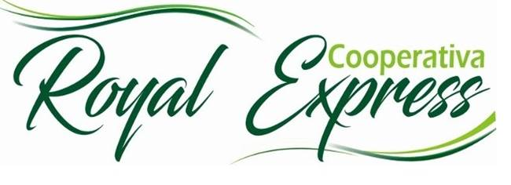

Nuestra Empresa

En la Cooperativa Royal Express prestamos el servicio de transporte especial de pasajeros en el territorio nacional, brindando seguridad, confianza y bienestar a nuestros clientes y asociados.
Seremos para el 2022 la empresa líder en el servicio de transporte especial de pasajeros a nivel regional, incursionando en nuevas unidades de negocio relacionadas con nuestra actividad y el turismo.
En la Cooperativa Royal Express prestamos servicio de transporte escolar, turístico y empresarial, garantizando la satisfacción de nuestros clientes y calidad en la prestación del servicio, brindando confiabilidad a los usuarios y entes de control. Estamos comprometidos con la implementación de la seguridad y salud en el trabajo, en busca de la prevención de lesiones y enfermedades, manteniendo las condiciones óptimas para la salud física, mental y social de nuestros asociados, colaboradores y partes interesadas que se encuentren dentro de nuestra organización, mediante la implementación de estrategias que permitan la identificación, evaluación y control de los riesgos inherentes a nuestra actividad económica, de igual manera la COOPERATIVA ROYAL EXPRESS se compromete con la consulta y participación de sus trabajadores. Igualmente reiteramos nuestro respeto hacia el medio ambiente y desarrollo sostenible, a través de la identificación y control de los aspectos ambientales, socioculturales y económicos producto del proceso de nuestra operación. Además, la Cooperativa Royal Express cuenta con procedimientos en materia de seguridad vial, teniendo como prioridad la prevención de la ocurrencia de accidentes de tránsito, por lo cual, todo vehículo propio o subcontratado, deberá respetar y acatar la normativa y señales de tránsito, abstenerse de conducir bajo el efecto del alcohol, drogas o en estado de cansancio, contar con personal calificado y capacitado para la conducción segura de vehículos, cumplir con las revisiones preventivas y las técnico-mecánicas establecidas, así como con el alistamiento del vehículo antes de la marcha. Es así, como nuestros compromisos son implementados bajo el cumplimento de los requisitos legales aplicables y otros estipulados por la Cooperativa, enfocándonos en la mejora continua de nuestros procesos, de los Sistemas de Gestión Ambiental, Seguridad y Salud en el Trabajo, Calidad y Seguridad Vial.
1. Generar Excedentes de las unidades de negocio, con el propósito de fortalecer el rendimiento económico de la Cooperativa. 2. Fortalecer la competencia del personal; suministrando herramientas de formación y capacitación bajo las exigencias del mercado y del sector logrando una cultura organizacional de acuerdo a las necesidades de la organización. 3. Mantener un parque automotor en óptimas condiciones, bajo los parámetros exigidos por los requisitos legales del sector, garantizando seguridad y confianza en la operación. 4. Controlar la operación de los servicios de transporte, llevando a cabo procedimientos en seguridad vial para prevenir la ocurrencia de accidentes de tránsito. 5. Satisfacer las necesidades de los clientes, a través del cumplimiento de los requisitos acordados y la gestión de las PQRS para lograr calidad y mejora continua en el servicio y los procesos. 6. Dar cumplimiento al sistema de gestión de seguridad y salud en el trabajo, mediante las actividades de control y prevención de lesiones y enfermedades, manteniendo las condiciones óptimas de salud física, mental y social de los colaboradores. 7. Promover el respeto por el medio ambiente bajo el control de los impactos ambientales de la operación.